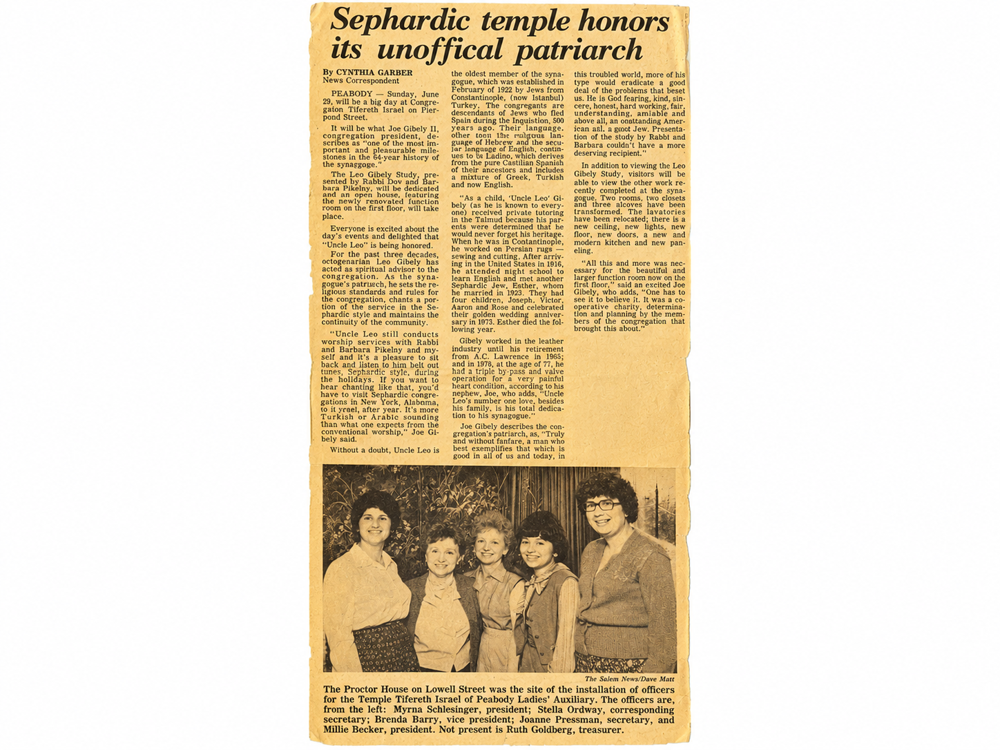
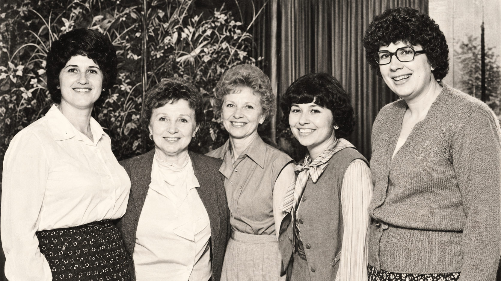
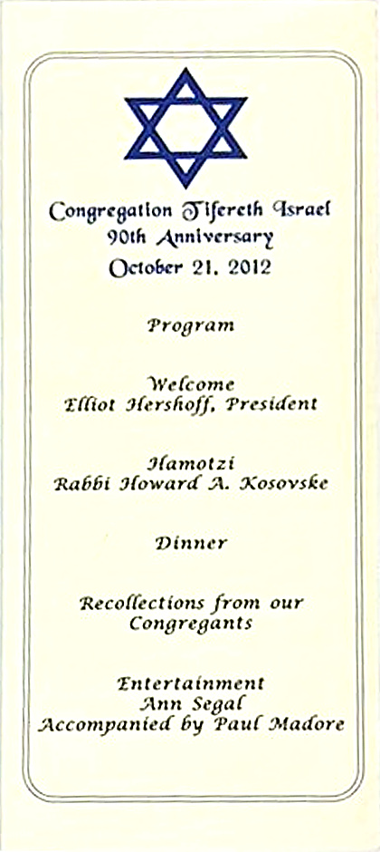

Salem News · October 3, 1972

The Peabody Times · October 4, 1976

March 1, 1979 · Archival document

The Salem Evening News · May 26, 1981

June 29 · circa 1986 (year inferred)

Undated · CTI historical photograph

The Salem Evening News · October 31, 1992

The Jewish Advocate · April 14–20, 1995
May 18, 1997 · CTI Archive

The Jewish Journal · January 19, 2001

2012 · Jewish Journal

2018 · Jewish Journal
Photograph forthcoming
New photograph forthcoming.
2019 · Jewish Journal

Congregation Tifereth Israel has been a gathering place for Sephardic Jews since 1922. Photo: Jakob Menendez
2022 · Weekly News